Cap. 1 História da Antropologia
A antropologia é uma ciência recente: surgiu no século XIX, mas vinha se formando desde o período colonial, no contato europeu com os povos originários das Américas, da África e da Oceania.
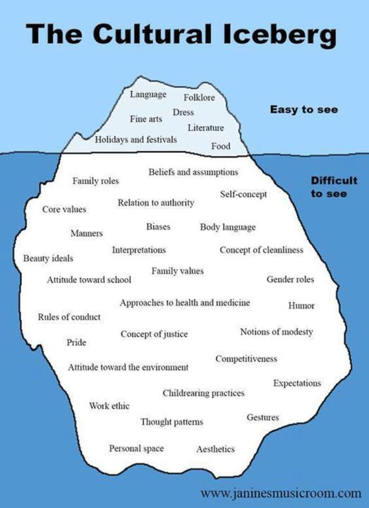
| Escola | Período | Nomes | Ideia central |
|---|---|---|---|
| Evolucionismo | Século XIX | Tylor, Morgan, Frazer | Progresso único: selvagens → bárbaros → civilizados |
| Culturalismo | 1888 até os anos 1940 | Boas, Benedict, Mead | Relativismo; raça ≠ cultura |
| Funcionalismo | Fim da 1ª Guerra até os anos 1940 | Malinowski | Todo costume cumpre uma função |
| Estruturalismo | 1940 até 1970 | Lévi-Strauss | Estruturas inconscientes comuns a todas as culturas |
Século XIX. Nomes e obras: Edward Tylor (Cultura Primitiva, 1871), Lewis Morgan (Sociedade Antiga, 1877) e James Frazer (O Ramo de Ouro, 1890).
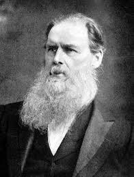
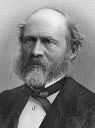
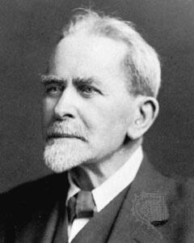
- Aplicavam as ideias de Charles Darwin (biologia) e de Herbert Spencer (filosofia) para explicar a diversidade cultural.
- Progresso unilinear: toda a humanidade seguiria um único caminho, em etapas: selvagens → bárbaros → civilizados.
- Os povos chamados de "selvagens" eram vistos como um "museu vivo" do passado humano.
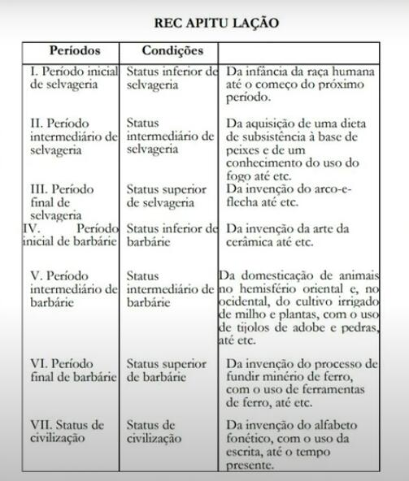
Método comparativo
- Buscava semelhanças e padrões entre as sociedades para encaixá-las nas etapas
Antropologia de gabinete
- Baseada em relatos de terceiros (viajantes, missionários); sem contato com os povos estudados
De 1888 até os anos 1940. Nomes e obras: Franz Boas (Os objetivos da etnologia, 1888), Ruth Benedict (Padrões de Cultura, 1934) e Margaret Mead (Sexo e Temperamento, 1935).
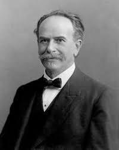
- Separaram raça de cultura: as diferenças culturais não são explicadas pela biologia.
- Rejeitaram a hierarquia entre povos "com cultura" e "sem cultura": toda sociedade tem cultura.
- Relativismo cultural: cada cultura deve ser compreendida dentro do seu próprio contexto e valores, sem impor padrões universais de moral ou superioridade.
- Deram centralidade à etnografia.
- Margaret Mead (estudos em Samoa e na Nova Guiné) mostrou que o comportamento de homens e mulheres e a forma de viver a adolescência são moldados pela cultura, e não determinados pela biologia ou pela genética.
Etnografia / antropologia de campo
- Coleta detalhada de costumes, línguas, comportamentos e visões de mundo
- O pesquisador vive junto ao grupo estudado
"Método histórico"
- Comparação apenas dentro de um território restrito, olhando a história própria de cada povo
- Oposto às grandes comparações universais dos evolucionistas
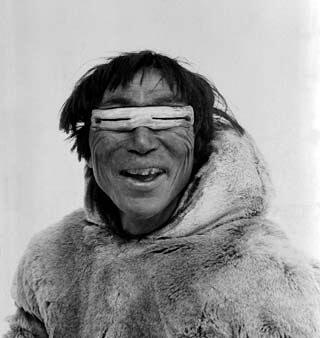
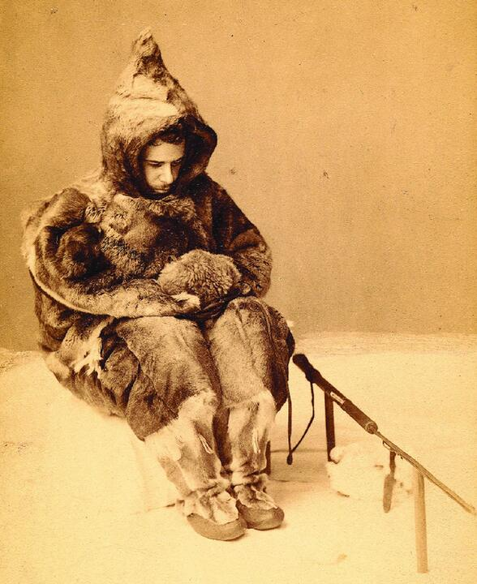
Fotos de pesquisas de campo usadas nos slides: o antropólogo passa a conviver com o grupo estudado.
Do fim da Primeira Guerra Mundial até os anos 1940. Nome: Bronislaw Malinowski (Argonautas do Pacífico Ocidental, 1922; Magia, Ciência e Religião, 1925).
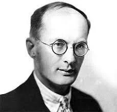
- Toda instituição e todo costume existem para satisfazer necessidades biológicas e psicológicas: essa é a sua função.
- A sociedade é um todo coerente de partes interdependentes, cada uma cumprindo funções para o equilíbrio do conjunto. O antropólogo precisa entender a "totalidade do real".
- Para descrever um grupo: esqueleto (organização e anatomia do grupo), sangue (cotidiano e atitudes) e espírito (modo de pensar).
- Método: trabalho de campo vivendo com o grupo, entendendo as funções do ponto de vista nativo.
- Sincronia, não diacronia: analisar a sociedade no momento presente, sem recorrer à sua história.
De 1940 até 1970. Nome: Claude Lévi-Strauss (As Estruturas Elementares do Parentesco, 1949; Antropologia Estrutural, 1958).
- Em todas as culturas há estruturas comuns.
- A estrutura não é visível: é um modelo inconsciente, no campo das representações mentais, que o pesquisador precisa construir intelectualmente.
- As culturas se organizam em sistemas simbólicos de oposição: iniciado/não iniciado, bem/mal, feminino/masculino.
- Mitos, costumes e papéis de gênero são reflexos da estrutura da mente humana.
Etnologia
- Comparação de várias etnografias para perceber as estruturas que as culturas compartilham
Binarismo
- Pensamento que classifica o mundo em duas categorias opostas e mutuamente exclusivas
Cap. 2 Cultura Popular, Erudita e Contracultura
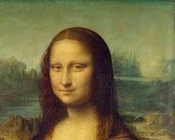
As duas imagens do slide: por que uma vai para o museu como "arte" e a outra costuma ser chamada de "artesanato"?
Cultura popular
- Expressa a sabedoria, o cotidiano e a identidade de um povo
- Nasce espontaneamente nas comunidades
- Oralidade e tradição: passa de geração em geração, sem manuais nem diplomas
- Identidade comunitária: fortalece o pertencimento a um grupo ou região
- Dinamismo: não é estática; ganha novos significados e elementos com o tempo
- Exemplos brasileiros: samba, cordel, bumba meu boi, capoeira
Cultura erudita
- Associada às elites econômicas e intelectuais
- Surge em instituições formais: academia, escolas, museus, teatros de ópera, conservatórios
- Exige aprendizado formal/técnico para ser criada e, muitas vezes, apreciada
- Historicamente financiada pelo Estado ou por mecenas
- Acesso restrito por barreiras econômicas ou pelo capital cultural prévio
- Busca complexidade técnica, rigor estético, durabilidade e preservação em acervos
Exemplos de cultura popular
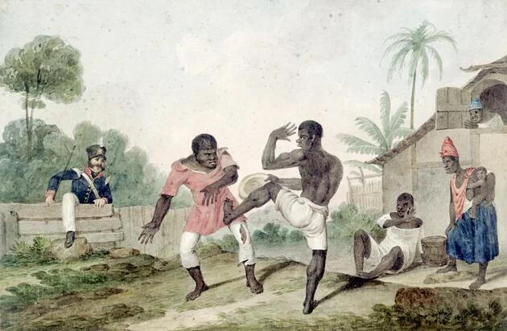
Exemplos de cultura erudita
A contracultura surgiu entre o fim dos anos 1950 e, principalmente, a década de 1960. O termo foi popularizado pelo historiador Theodore Roszak (livro de 1969) para descrever um movimento social, cultural e político de uma nova juventude que rejeitava os valores, o modo de vida e as instituições da sociedade ocidental do pós-guerra. Esses valores se expressaram no rock, na moda hippie e nos movimentos estudantis.
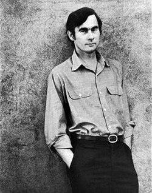
| Momento | O que aconteceu |
|---|---|
| Anos 1950 | Crescimento econômico e ascensão da classe média no Ocidente. Pela primeira vez, os jovens são vistos como um grupo social e consumidor próprio, longe das responsabilidades adultas imediatas. |
| Anos 1960 | A tensão EUA × URSS (Guerra Fria) gera incerteza sobre o futuro. A juventude questiona o pragmatismo e o autoritarismo das gerações anteriores, que pareciam levar o mundo à destruição. |
| Guerra do Vietnã (EUA no conflito, 1964-1973) | O envio obrigatório de jovens americanos ao Vietnã gera indignação. Surge o lema "Faça amor, não faça a guerra", rejeição direta ao militarismo do Estado. |
| 1968 | Ano de revoltas pelo mundo. Na França, o Maio de 1968 reuniu greves estudantis e operárias. Nos EUA, ganhavam força a luta contra o racismo (Martin Luther King Jr., assassinado em abril de 1968, e os Panteras Negras), a segunda onda do feminismo e a revolução sexual, favorecida pela pílula anticoncepcional. |
Surgiram no fim dos anos 1940 e se consolidaram nos anos 1950 nos EUA. Expoentes: Jack Kerouac, Allen Ginsberg e William S. Burroughs.
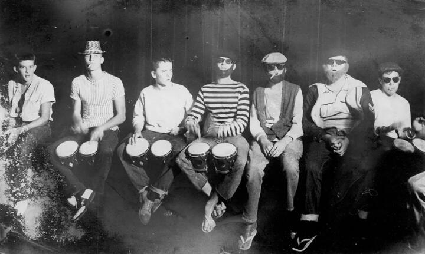
- Ruptura com o "Sonho Americano": rejeição ao consumismo, ao puritanismo e à vida suburbana padronizada do pós-guerra.
- Busca por estados alterados de consciência, viagens sem rumo como busca existencial (On the Road, de Kerouac) e interesse pelas filosofias orientais (Budismo Zen).
- Literatura com fluxo de consciência, linguagem de rua, ritmo do jazz (bebop) e versos livres sobre sexo, drogas e angústia existencial.
- Vida boêmia em cafés, clubes de jazz e comunidades urbanas marginalizadas.
O ápice da contracultura dos anos 1960, com centros em San Francisco e Nova York, movido pela juventude contra a Guerra do Vietnã e o estilo de vida corporativo.
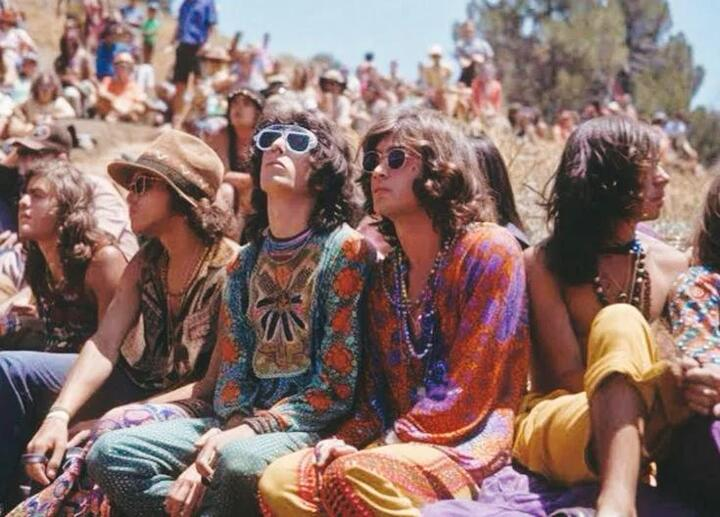
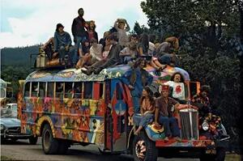
- Pacifismo e antimilitarismo: lema "Make Love, Not War" e resistência ao alistamento militar.
- Revolução sexual: questionamento do casamento tradicional, amor livre, emancipação do corpo e uso da pílula.
- Vida em comunidades rurais coletivas, retorno à natureza, alimentação natural/vegetariana e exploração sensorial.
- Estética: roupas artesanais, tie-dye, cabelos compridos e flores como símbolo de não violência (Flower Power).
Surgiu na Jamaica nos anos 1930, nas classes populares urbanas e rurais, e ganhou projeção mundial nos anos 1970 com o reggae de Bob Marley.
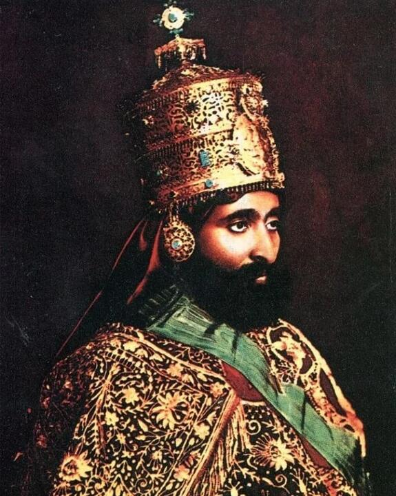
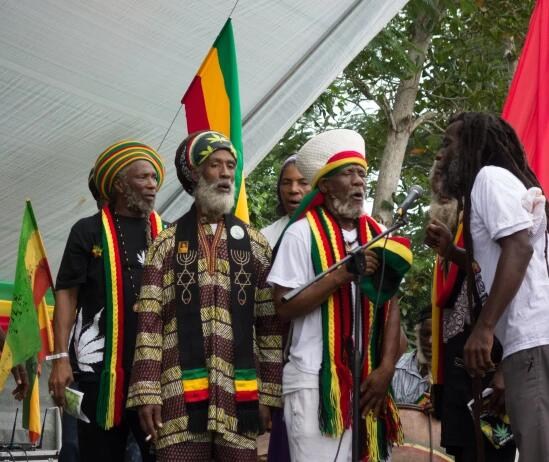
- Movimento messiânico e de fé: reverenciam Jah (Deus) e veem o imperador etíope Haile Selassie I como a encarnação divina. A Bíblia é lida de forma afrocentrada, pela libertação do povo negro.
- "Babilônia": nome dado ao sistema ocidental capitalista e colonialista, que corrompe a alma e a conexão com a natureza.
- Orgulho e identidade negra: rejeição à assimilação da cultura branca europeia e valorização das raízes africanas; a Etiópia é a terra prometida (Zion).
- Práticas: alimentação Ital (natural e orgânica), uso ritual da cannabis (ganja) como sacramento e os dreadlocks como voto de fé, símbolo do Leão de Judá e recusa do padrão estético ocidental.
Surgiu em meados dos anos 1970, em Londres e Nova York, em meio à crise econômica, ao desemprego jovem e ao fim das utopias dos anos 1960.
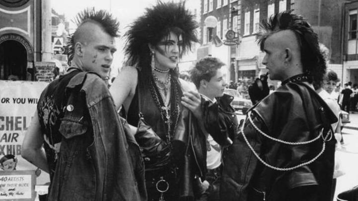
- Movimento político: muitos punks assumiram o anarquismo (anarcopunk), defendendo a abolição do Estado e criticando o capitalismo, o fascismo, o militarismo e qualquer hierarquia opressora; no Reino Unido, o alvo foi o governo de Margaret Thatcher (1979-1990).
- Ética DIY (Do It Yourself / Faça Você Mesmo): produção cultural independente e autogestionária, com fanzines xerocados, selos comunitários, shows sem intermediação do mercado e roupas customizadas.
- Lema "No Future" (Sem Futuro): denúncia da falta de perspectiva da juventude trabalhadora e rejeição à moral burguesa.
- Estética de choque: ruptura com a beleza clássica e com o visual hippie; jaquetas de couro rasgadas, coturnos, alfinetes e moicanos coloridos para expor a decadência do sistema.
| Movimento | Onde e quando | Marca registrada |
|---|---|---|
| Beatniks | EUA, anos 1950 | Literatura, jazz, On the Road |
| Hippies | EUA, anos 1960 | Pacifismo, Flower Power, comunidades |
| Rastafáris | Jamaica, anos 1930 (global nos anos 1970) | Fé em Jah, "Babilônia", reggae |
| Punks | Londres e Nova York, anos 1970 | DIY, anarquismo, "No Future" |
Cap. 3 Escola de Frankfurt e Indústria Cultural
Corrente de teoria social e filosofia fundada na Alemanha nos anos 1920, em torno do Instituto para a Pesquisa Social da Universidade de Frankfurt.
Teoria Crítica
- Oposição à teoria tradicional e ao positivismo
- O conhecimento não é neutro
- Deve servir para emancipar o ser humano, e não só descrever ou justificar a sociedade
Crítica à Razão Instrumental
- Razão usada só como ferramenta de cálculo e eficiência técnica
- Serve à dominação da natureza e das pessoas
- Para eles, abriu caminho para tragédias como o nazismo
Theodor Adorno e Max Horkheimer.
Indústria Cultural é o processo pelo qual a produção cultural e artística passa a seguir a mesma lógica do sistema capitalista: a criação vira um produto padronizado, feito para o consumo em massa e voltado ao lucro.
- Os produtos culturais são fabricados em série, seguindo fórmulas que garantem aceitação do público.
- O resultado é uma experiência previsível e repetitiva, que deixa de lado a criatividade e a originalidade.
| Efeito | O que significa |
|---|---|
| Alienação | O consumo de produtos padronizados despersonaliza o indivíduo (torna-o alheio a si mesmo): ele perde autonomia e capacidade de pensamento crítico. |
| Reprodução de ideologias | Legitima os interesses das classes dominantes, perpetua as desigualdades e reforça a ideologia capitalista. |
| Decadência da cultura | A cultura popular e a erudita são simplificadas e descontextualizadas, perdendo autenticidade e valor crítico. |
Exemplos
| Exemplo | Como funciona |
|---|---|
| Cinema de Hollywood | Filmes com fórmulas de sucesso: histórias previsíveis de heróis e finais felizes. |
| Música pop | Canções fáceis de assimilar, com padrões de ritmo, letra e melodia que garantem sucesso comercial. |
| TV e streaming | Séries e programas feitos para prender a atenção e manter o consumo contínuo. |
| Publicidade | Vende estilos de vida, não só produtos: a ilusão de que felicidade e sucesso dependem do consumo. |
| Fast fashion | Moda rápida e barata que transforma roupas em bens descartáveis, com tendências de curta duração. |
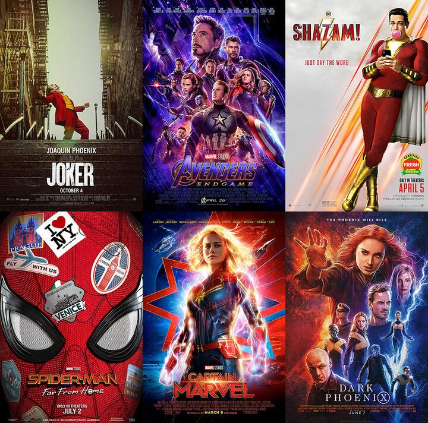
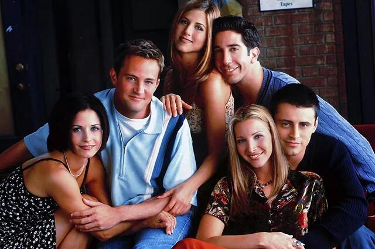
| Ideia | O que significa |
|---|---|
| Lazer como prolongamento do trabalho | Para Adorno, a diversão padronizada repete o ritmo e a lógica da fábrica: o tempo livre serve para descansar e voltar a trabalhar, não para pensar. |
| Entretenimento como distração | O entretenimento padronizado distrai, não emancipa. Ele desvia a atenção dos problemas reais em vez de ajudar a questioná-los. |
| Catarse | Para Aristóteles, a catarse era a purificação das emoções pela arte (como na tragédia grega). A crítica frankfurtiana a reinterpreta como descarga emocional sem reflexão: a pessoa chora ou se empolga e sai igual. |
| Ideologia | Conceito de Marx retomado pela Escola de Frankfurt: um mecanismo que faz as relações de dominação parecerem naturais, como se sempre tivessem sido assim. |
As ideias de Adorno e Horkheimer continuam sendo usadas para pensar a cultura digital:
- As plataformas de streaming funcionam como novas formas de padronização cultural (algoritmos que recomendam mais do mesmo, séries feitas para maratonar).
- Ter acesso à internet não garante que todos se tornem produtores culturais autônomos.
- A produção colaborativa na internet não substituiu a dominação econômica: as grandes empresas continuam controlando as plataformas.
- O excesso de informação pode reforçar a alienação, em vez de ampliar a consciência crítica.
- A cultura erudita não ficou totalmente acessível com a internet: as desigualdades de acesso (econômicas e de capital cultural) continuam.
A Indústria Cultural cria uma nova forma de cultura, voltada ao consumo e ao lucro: a cultura de massa.
Cultura popular e erudita
- Os bens culturais se sustentam por uma tradição histórica
- E por valores compartilhados
Cultura de massa
- Readapta esses bens para o consumo do maior número de pessoas
- Independe da classe social do consumidor
Para atingir as pessoas, a indústria usa os meios de comunicação de massa (TV, rádio, internet) e a publicidade e o marketing. Eles dão uma falsa sensação de poder e de liberdade, oferecendo produtos que parecem feitos sob medida para cada consumidor.
Walter Benjamin (1892-1940), também ligado à Escola de Frankfurt, via outro lado: o mesmo sistema que aliena poderia democratizar a arte, ampliando seu alcance. A tecnologia poderia difundir a cultura de forma acessível e transformadora.
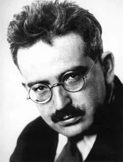
| Potencial positivo | Ideia |
|---|---|
| Democratização da arte | A produção em massa permite que mais pessoas tenham acesso à cultura. |
| Ressignificação da arte | A arte pode ser transformada e difundida para promover mudanças sociais. |
| Acesso à produção cultural | Ferramentas tecnológicas permitem criar cultura mesmo fora do sistema comercial. |
É o conjunto de ideias, práticas, imagens e objetos que se tornaram amplamente populares, adotados e ressignificados pelas pessoas em determinado período. Envolve linguagem compartilhada, estética e pertencimento social.
- Origem híbrida: pode nascer da indústria de massa, mas ganha vida própria no engajamento das pessoas e comunidades.
- Apropriação pelo público: o público não é só passivo; cria memes, teorias, roupas e eventos (cosplay, convenções) e dá novos sentidos às obras.
- Identidade: funciona como um "código cultural" que une gerações ou grupos urbanos.
- O que é "pop" muda com frequência, conforme o interesse da sociedade.
- Se caracteriza pela repetição e pela fácil assimilação de símbolos e narrativas.
- Tem impacto político: não é "só entretenimento"; pode reforçar ou contestar valores, padrões e identidades.
Quiz de Revisão
38 questões (múltipla escolha e verdadeiro ou falso) sobre história da antropologia, cultura popular e erudita, contracultura e Indústria Cultural.
Os primeiros relatos sobre os povos das Américas, da África e da Oceania eram enviados à Europa por viajantes e administradores coloniais.
1. A origem da antropologia está ligada a esses relatos porque eles
No século XIX, Lewis Morgan classificou as sociedades em estágios: selvageria, barbárie e civilização. Os povos "selvagens" seriam um retrato vivo do passado da humanidade.
2. Essa visão é típica do
James Frazer escreveu O Ramo de Ouro (1890) sem nunca ter visitado os povos sobre os quais escrevia, usando relatos de missionários e viajantes.
3. Esse modo de trabalhar ficou conhecido como
Franz Boas mostrou que as diferenças entre os povos não são explicadas pela biologia, e que cada cultura deve ser entendida segundo os seus próprios valores.
4. Essas ideias correspondem, respectivamente,
Nas Ilhas Trobriand, Malinowski observou o Kula: colares e braceletes circulam entre ilhas, são dados, recebidos e retribuídos, criando alianças políticas e sociais.
5. Pela ótica funcionalista, o Kula deve ser entendido
Para Lévi-Strauss, a proibição do incesto existe em todas as sociedades, embora as regras sobre quem é parente proibido mudem de uma para outra.
6. Por isso, o tabu do incesto é considerado
Lévi-Strauss comparou o Papai Noel aos katchina dos povos Pueblo: figuras mascaradas que encarnam ancestrais, visitam as aldeias, punem ou recompensam as crianças e escondem a identidade dos adultos.
7. Com essa comparação, ele procurava mostrar que
Tylor, Morgan e Frazer faziam longas permanências em campo, observando diretamente as culturas que estudavam.
8. Verdadeiro ou falso?
O culturalismo de Franz Boas afirmava que todas as culturas seguem a mesma trajetória evolutiva rumo à civilização.
9. Verdadeiro ou falso?
Margaret Mead concluiu que o comportamento das mulheres samoanas era determinado pela genética.
10. Verdadeiro ou falso?
Para Malinowski, cada instituição social cumpre uma função, e a análise deve focar o presente, não a origem histórica.
11. Verdadeiro ou falso?
O etnocentrismo pode ser inconsciente, como quando alguém acha outra cultura "estranha" sem perceber que usa a própria como régua.
12. Verdadeiro ou falso?
A globalização elimina o etnocentrismo, porque o contato entre culturas acaba com os preconceitos.
13. Verdadeiro ou falso?
O bumba meu boi do Maranhão é aprendido nas festas, com os mais velhos, e ganha elementos novos a cada geração sem deixar de ser reconhecido pela comunidade.
14. Esse exemplo reúne características da cultura popular, como
Para compor uma ópera, um músico estuda anos em um conservatório; para apreciá-la plenamente, o público costuma precisar de conhecimento prévio, além de pagar ingressos caros.
15. As características descritas são típicas da cultura
Nos anos 1950, com o crescimento econômico do pós-guerra, os jovens passaram a ser vistos pela primeira vez como um grupo social e consumidor próprio.
16. Na década seguinte, essa juventude passou a questionar as gerações anteriores principalmente por
1968 ficou marcado como um ano de revoltas em vários países.
17. Qual alternativa associa corretamente um acontecimento a esse contexto?
Jack Kerouac cruza os EUA sem destino em On the Road; Allen Ginsberg escreve versos livres sobre sexo, drogas e angústia, no ritmo do jazz bebop.
18. Esses autores pertencem ao movimento
Comunidades rurais coletivas, roupas tie-dye, flores como símbolo de não violência e resistência ao alistamento militar.
19. Esses elementos identificam os
Para esse movimento, Haile Selassie I é a encarnação divina, a Etiópia é Zion e os dreadlocks são um voto de fé.
20. Sobre o movimento descrito, é correto afirmar que
Fanzines xerocados, selos musicais comunitários, shows sem intermediação do mercado e roupas customizadas pelo próprio jovem.
21. Essas práticas expressam
Samba e cordel são exemplos de cultura popular brasileira.
22. Verdadeiro ou falso?
A cultura erudita é superior à popular, pois busca a "arte pura".
23. Verdadeiro ou falso?
O rock, a moda hippie e os movimentos estudantis expressaram valores da contracultura.
24. Verdadeiro ou falso?
Para os pensadores da Escola de Frankfurt, o conhecimento não é neutro: ele deve servir para emancipar o ser humano, e não só para descrever ou justificar a sociedade como ela é.
25. Essa postura caracteriza a
Um estúdio lança todo ano filmes com a mesma estrutura: herói em perigo, reviravolta no meio e final feliz, porque pesquisas mostram que essa fórmula vende mais ingressos.
26. Segundo Adorno e Horkheimer, esse caso ilustra a Indústria Cultural porque
Uma campanha publicitária mostra jovens bonitos, felizes e bem-sucedidos usando um tênis. O produto quase não aparece; o que se vende é um estilo de vida.
27. Para a Escola de Frankfurt, a liberdade que o consumidor sente ao escolher esse tênis é
Assistir a uma série atrás da outra, sem tempo para refletir, e passar a desejar o que todos desejam, sem perceber de onde vem esse desejo.
28. Os frankfurtianos chamam esse efeito de alienação porque o consumo padronizado
Milhões de pessoas conhecem a Mona Lisa por fotos, pôsteres e camisetas, sem nunca terem ido ao Louvre.
29. Para Walter Benjamin, esse fenômeno
Os filmes da Marvel foram criados por um grande estúdio, mas os fãs fazem cosplay, escrevem fanfics, criam memes e organizam convenções.
30. Por que esse universo é considerado cultura pop, e não só produto da Indústria Cultural?
Depois de um filme de super-herói, o espectador sai emocionado e aliviado, mas sem ter refletido sobre nada do que viu.
31. A crítica frankfurtiana interpreta essa experiência como
"Sempre houve ricos e pobres; é assim que o mundo funciona."
32. Para Marx e para a Escola de Frankfurt, essa frase é um exemplo de ideologia porque
Hoje qualquer pessoa pode postar vídeos, músicas e textos. Por isso, dizem alguns, a Indústria Cultural acabou.
33. Com base no resumo, essa conclusão é
A Escola de Frankfurt via o entretenimento de massa como um caminho para a emancipação.
34. Verdadeiro ou falso?
Para Adorno, a diversão da Indústria Cultural funciona como um prolongamento do trabalho.
35. Verdadeiro ou falso?
As plataformas de streaming podem ser vistas como novas formas de padronização cultural.
36. Verdadeiro ou falso?
Com a internet, a cultura erudita ficou totalmente acessível e as desigualdades de acesso acabaram.
37. Verdadeiro ou falso?
A cultura pop não tem impacto político, pois é voltada apenas ao entretenimento.